Feel free to reach out via email for collaborations or questions.
I am a PhD student in Computer Science at the University of Maryland, Baltimore County (UMBC), where I am a member of the Social Intelligence Lab. My research sits at the intersection of natural language processing, human-computer interaction, and trustworthy AI.
Prior to UMBC, I completed an M.Sc. and B.Sc. in Computer Science and Engineering at BRAC University (CGPA 3.88 and 3.49 respectively). During my master's I worked on self-supervised learning and published work on sarcasm detection in Bangla social media text.
My current research focuses on building AI systems that are interpretable, fair, and genuinely useful for people — with particular attention to how language models handle socially complex content such as hate speech, misinformation, and human emotion.
News
Apr 2026
Joined the Social Intelligence Lab at UMBC as a PhD student.
Mar 2025
Paper accepted at ICREST'25: A Smart Tutor Avatar for Mimicking Characters of Bangla Sign Language.
2025
Dataset paper on Emotional Context Analysis in Advertisements submitted to Data in Brief (under review).
Received Merit Scholarship based on academic results at BRAC University (Spring & Summer 2024).
My research asks: how can we build AI systems that people can truly understand, trust, and effectively use? I work at the intersection of NLP, Human-Computer Interaction, and AI in Education, designing interpretable and human-centered AI systems for socially complex language tasks, educational technologies, and interactive learning environments.
Research Areas
💬
Natural Language Processing
Sarcasm and irony detection, hate speech classification, rumor detection, and sentiment analysis with a focus on low-resource and non-English languages.
🤝
Human-Computer Interaction
Designing and evaluating AI-powered interfaces with usability principles — including interaction design, accessibility, and intelligent tutoring systems.
🔍
Explainable AI
Applying model-agnostic explanation methods (LIME, SHAP) to make black-box classifiers interpretable for end users and domain experts.
Selected Projects
Interpretable Bangla Sarcasm Detection
Developed a BERT-based sarcasm detector for Bangla social media text (Facebook, YouTube) achieving 99.60% accuracy. Applied LIME to provide human-readable explanations for model predictions. Introduced the BanglaSarc dataset.
Built a classification pipeline on Twitter data using multiple ML models and bi-directional LSTM with word2vec embeddings. The best model was explained using LIME. Compared performance across traditional ML and deep learning approaches.
Designed a smart avatar system that mimics all 49 characters of Bangla Sign Language (BSL). Uses ML and image processing to recognize hand gestures and provide real-time feedback via cosine similarity. Accepted at ICREST'25.
Computer VisionAccessibilityHCI
Emotional Context in Advertising Audio
Constructed a multimodal dataset of 1,000 audio clips from 100 broadcast advertisements, annotated for Arousal, Valence, Dominance, Liking, and Purchase Intent. Submitted to Data in Brief (under review).
DatasetEmotion RecognitionAudio
Explainable Flight Fare Prediction
Applied EDA, feature engineering, and multiple regression models to flight pricing data. Random Forest achieved best performance; LIME explanations were generated to interpret individual predictions.
Interpretable Bangla Sarcasm Detection using BERT and Explainable AI
Ramisa Anan, Tasnim Sakib Apon, Zeba Tahsin Hossain, Elizabeth Antora Modhu, Sudipta Mondal, MD. Golam Rabiul Alam
2023 IEEE 13th Annual Computing and Communication Workshop and Conference (CCWC), Las Vegas, NV — March 2023
Published
A positive phrase or sentence with an underlying negative motive is defined as sarcasm, widely used on social media platforms such as Facebook, Twitter, and Reddit. This paper presents a BERT-based system achieving 99.60% accuracy for Bangla sarcasm detection, outperforming traditional ML approaches (89.93%). LIME is applied for interpretability, and the newly collected BanglaSarc dataset is introduced for evaluation.
@INPROCEEDINGS{10099331, author={Anan, Ramisa and Apon, Tasnim Sakib and Hossain, Zeba Tahsin and Modhu, Elizabeth Antora and Mondal, Sudipta and Alam, MD. Golam Rabiul}, booktitle={2023 IEEE 13th Annual Computing and Communication Workshop and Conference (CCWC)}, title={Interpretable Bangla Sarcasm Detection using BERT and Explainable AI}, year={2023}, pages={1272-1278}, doi={10.1109/CCWC57344.2023.10099331}}
A Smart Tutor Avatar for Mimicking Characters of Bangla Sign Language
Sudipta Mondal et al.
4th International Conference on Recent Advancements in Science and Technology (ICREST'25)
Published
This research introduces a novel avatar system for Bangla Sign Language (BSL) that teaches all 49 BSL characters through an interactive interface. Using ML and image processing, the avatar analyzes hand gestures and provides immediate feedback via cosine similarity. This is the first study of its kind focused on BSL tutoring.
A Comprehensive Audio Dataset for Emotional Context Analysis in Advertisements
Sudipta Mondal et al.
Data in Brief (Elsevier)
Under Review
This dataset includes audio features and annotations linked to emotions (Arousal, Valence, Dominance, Liking, Purchase Intent) from 100 broadcast advertisements. Audio files were segmented into 1,000 six-second clips, providing a standardized resource for emotion recognition and advertising effectiveness research.
This portfolio documents work completed for HCC 629 Fundamentals of Human-Centered Computing coursework, demonstrating the application of interaction design principles, usability evaluation, and user-centered design methods.
Case Study 01
Improving Usability of E-commerce and Industrial Websites using Interaction Design Principles
This project applied seven core interaction design principles to evaluate and redesign two commercial websites: Zara (e-commerce fashion) and Toronto Cupcake / Paradise Water (food and industrial). Each principle was applied to a real usability issue found on these sites, with a before-and-after Figma redesign produced for each.
Site 1Zara.com
01 Visibility
Visibility means important actions should be easy to see. Users should not have to search for key controls. The more visible functions are, the more likely users know what to do next (Reynolds, 2026).
Issue: The Zara homepage places menu items (Search, Shopping Bag, Log In, Help) directly over a visually busy background image. With little contrast between text and background, these important actions become hard to find.
Redesign: Added a semi-transparent background strip behind the navigation bar to create contrast, making the menu clearly distinguishable from the background image.
Before
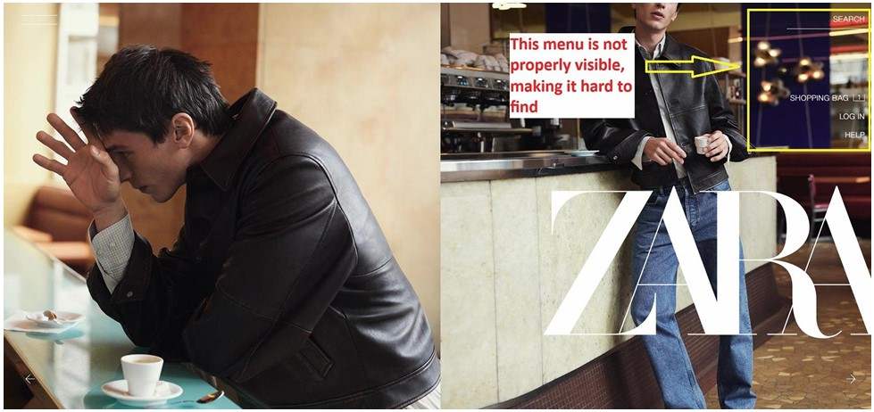
After
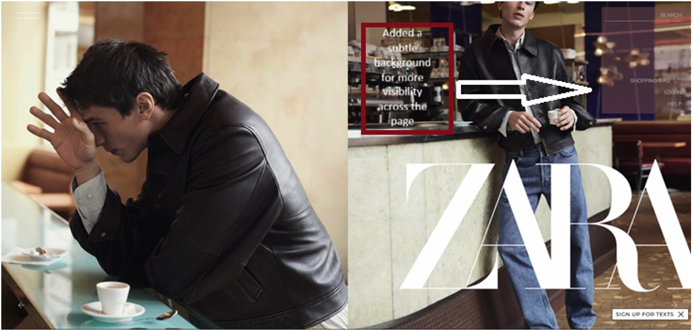
02 Feedback
Feedback refers to the system visually communicating its current state to the user. Systems should always visually indicate their state (Reynolds, 2026).
Issue: In Zara's sub-menu, the active item ("Origins") has no visual highlight. The user has no way to know which sub-menu item is currently selected without randomly clicking to verify their location.
Redesign: Added a black background highlight to the active sub-menu item, giving the user a clear indicator of their current position within the navigation.
Before
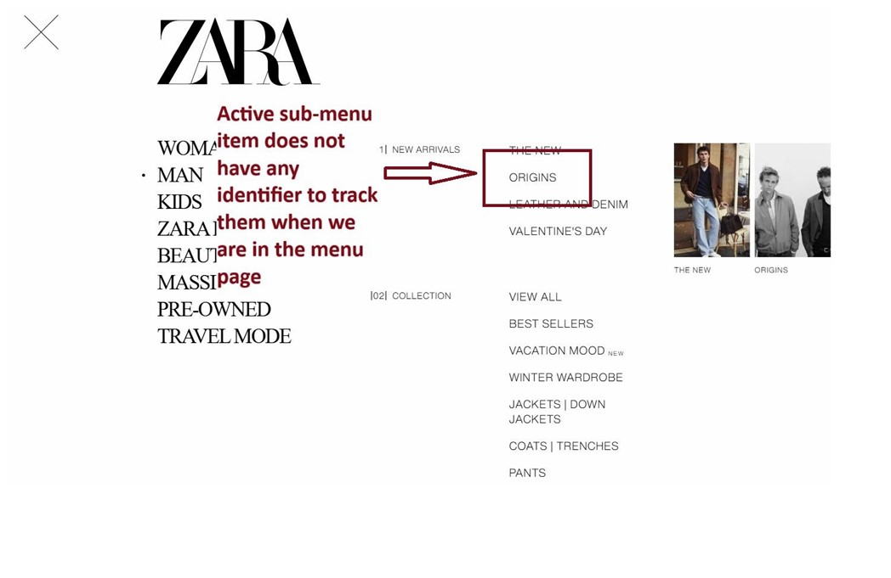
After
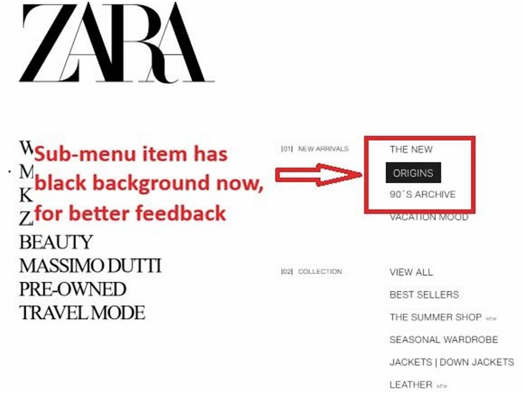
03 Consistency
Consistency means similar actions behave the same way across all pages. Systems are more usable and learnable when similar parts are expressed in similar ways (Lidwell et al., 2010).
Issue: Most Zara sub-menus display a standard text-based list layout. However, the Kids menu suddenly switches to an image-based grid layout — a jarring inconsistency that breaks the learned navigation pattern.
Redesign: Introduced an intermediate sub-menu for Kids with age-group options (Girl, Boy, Toddler) so it first expands into the standard text layout before showing the image grid — keeping it consistent with all other menu items.
Before
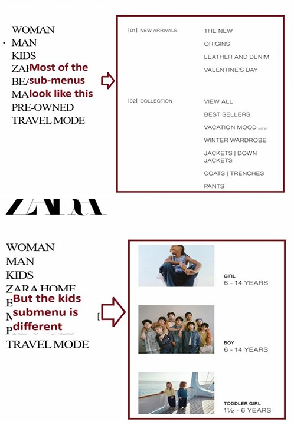
After
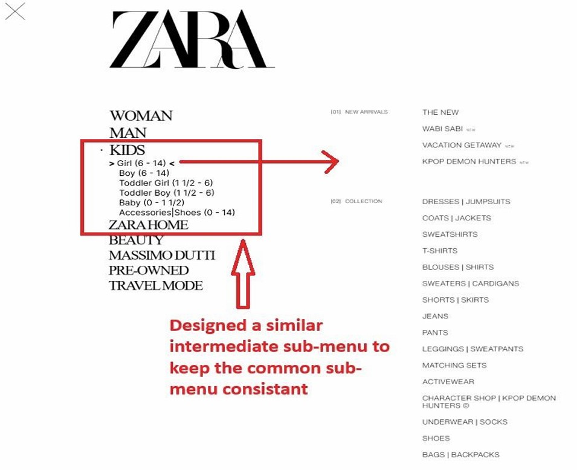
04 Constraints
Constraints limit user actions to guide them toward the correct next step and prevent errors. A good constraint reduces confusion by making invalid paths unavailable (Reynolds, 2026).
Issue: When a user clicks the payment button on Zara's product page, a "Terms and Conditions" pop-up appears immediately. At this point, the user's main concern is verifying they are paying for the correct item — not accepting legal terms. The sequence violates natural task flow.
Redesign: Added a "Confirm Your Order" modal showing the product image, size, quantity, and total price before any legal acceptance. This constrains the action to the relevant task at hand and moves the Terms and Conditions to the following step.
Before
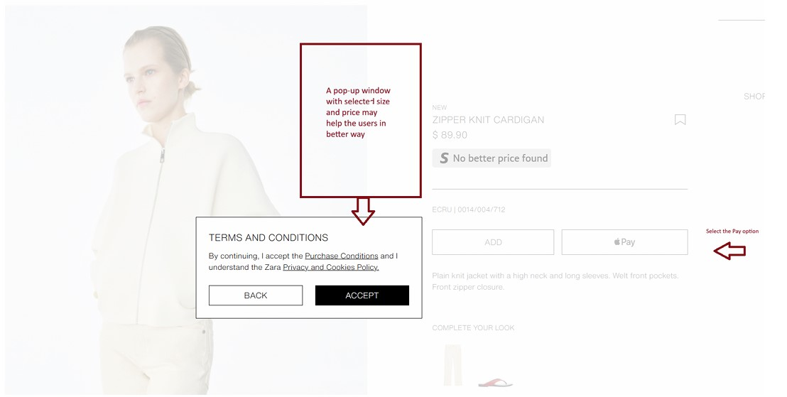
After
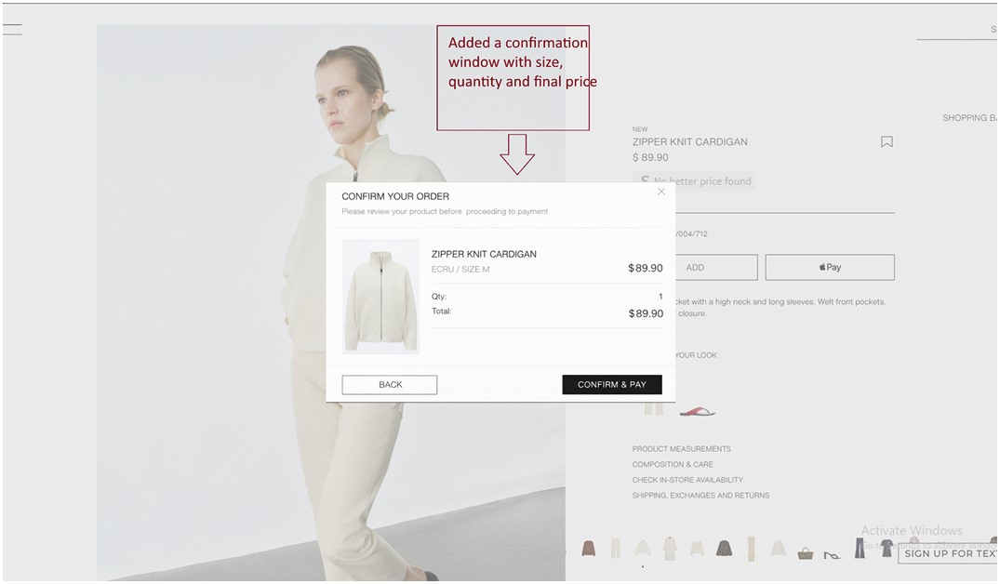
Site 2Toronto Cupcake & Paradise Water
05 Affordances & Signifiers
An affordance is the visual clue a UI element provides about what can be done with it. A signifier uses dedicated text or symbols to make that affordance explicit (Reynolds, 2026; Norman, 2013).
Issue 1 (Toronto Cupcake): The "USA TARIFFS" element looks like a static navigation label rather than a clickable button, even though clicking it triggers an important notice. There is no visual signal — no raised style, no border, no hover state — that it is interactive.
Issue 2 (Paradise Water): Phone numbers on the homepage are clickable and invoke the device's calling app, but nothing visually signals this capability to the user.
Redesign: Added a raised button style to "USA TARIFFS" to make its affordance obvious. Added dedicated phone call icons next to the phone numbers on Paradise Water to clearly signify their functionality.
Before
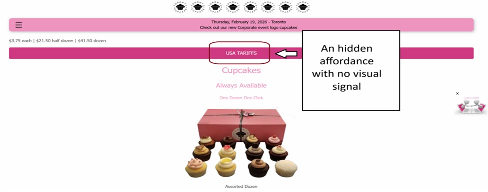
After
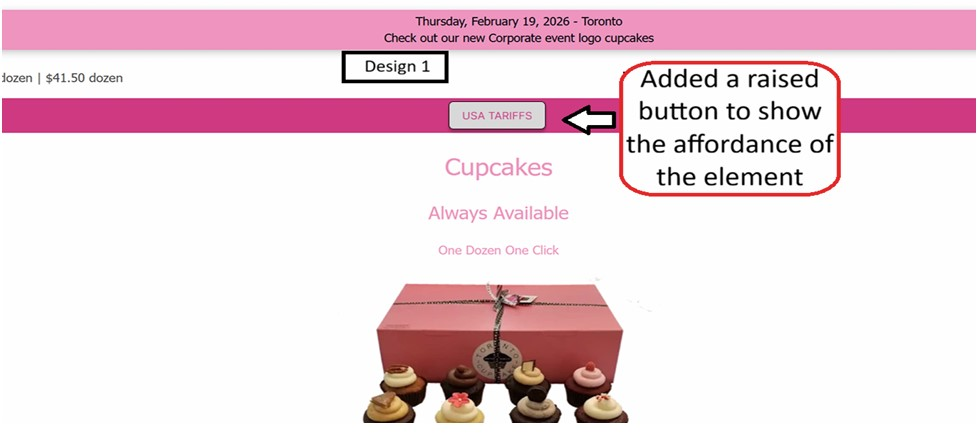
06 Mapping
Mapping refers to the logical relationship between a control and its outcome. When controls behave as users expect, navigation feels natural and intuitive (Reynolds, 2026; Sharp et al., 2023).
Issue 1: The Toronto Cupcake main page explicitly tells users to click product images for ingredient and allergen details. However, clicking the 12-cupcake set image shows no such information — the expected behavior described on the page does not occur, breaking the user's mental model.
Issue 2: A banner reading "Check out our new Corporate event logo cupcakes" shows a hand cursor on hover — a standard signal for a clickable link. But clicking does nothing. The control does not map to any real system effect, completely breaking user expectation.
Redesigns: Added the missing ingredient and allergen text to the 12-cupcake modal. Made the corporate cupcakes banner navigate correctly to the Corporate Logo Cupcakes page.
Before
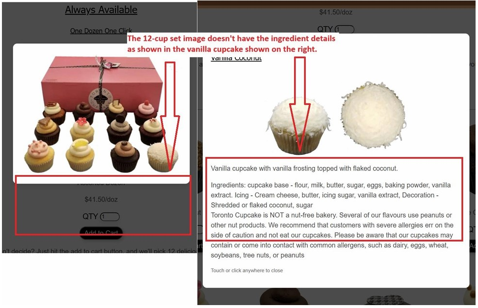
After
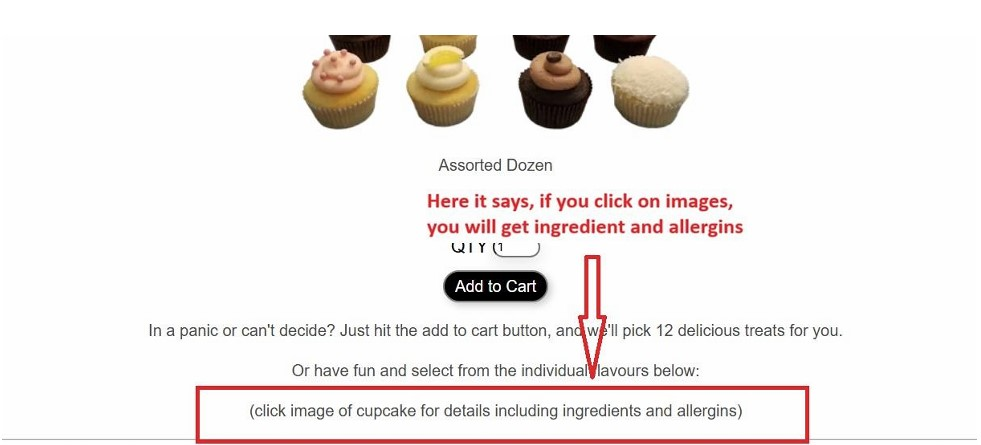
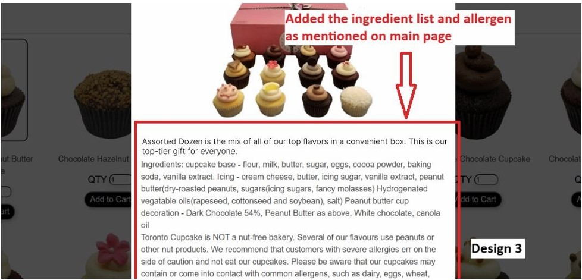
07 Matrix of Domination & Accessibility
The matrix of domination framework helps identify how structural design decisions can systematically disadvantage certain user groups, even unintentionally.
Issue: The Paradise Water website uses green text on a white background throughout key sections. This creates a visual accessibility barrier for users with red-green color vision deficiency. The site structurally privileges users with typical color vision by not enforcing accessibility standards as a built-in design rule.
This is an example of the structural domain of domination: the default assumption in design and development was a typical user, leaving others disadvantaged by the interface itself.
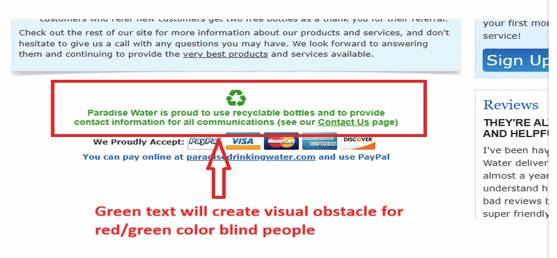
Green text on white background creates contrast issues for color-vision deficient users.
Reflection
This project showed that usability problems rarely stem from missing features — they come from small design decisions: a missing highlight, an unlabeled button, an inconsistent layout. Evaluating real commercial sites made each principle concrete and tangible. Producing Figma redesigns for each issue reinforced that good interaction design is not about aesthetics alone, but about how clearly a system communicates with its users.
References
Lidwell, W., Holden, K., & Butler, J. (2010). Universal principles of design. Rockport Publishers.
Norman, D. A. (2013). The Design of Everyday Things: Revised and Expanded Edition. Basic Books.
User TestingPrototypingPrototype SketchingGulf of ExecutionHidden AffordanceInteraction Design
Overview
This two-sprint project followed the full interaction design process to identify usability issues in NotebookLM (Google's AI-powered research tool), produce low-fidelity sketch redesigns, build a prototype, and test it with real users. Three core usability issues were identified, each addressed with sketched redesign ideas and then evaluated through structured user testing.
Sprint 1Issue Identification & Sketching
01 Grid — Information Density
Issue Identified: The NotebookLM homepage uses excessive vertical spacing around content blocks, forcing users to scroll much longer than necessary to get an overview of the product's offerings. The layout wastes screen real estate and slows information consumption.
Sketch Redesigns: Two redesign sketches were produced by each team members to explore denser grid layouts that could display the same content in roughly half the vertical space.
Sketch Idea 1
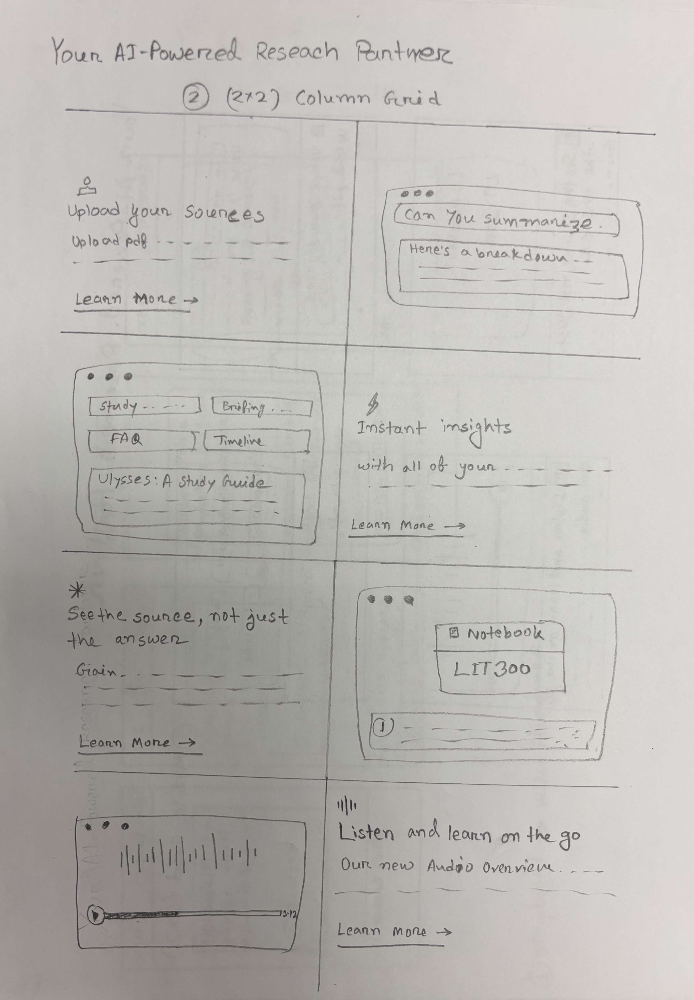
Sketch Idea 2
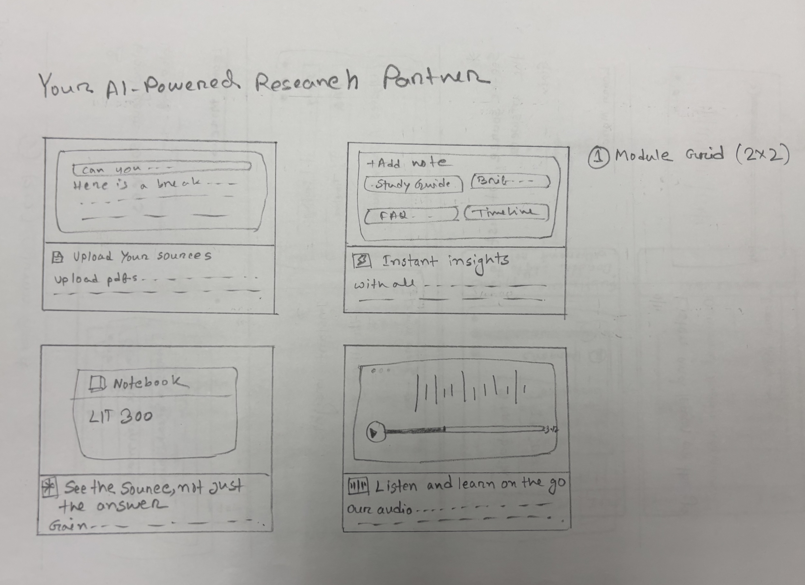
02 Hidden Affordance — Carousel
Issue Identified: The homepage has a horizontally auto-scrolling customer feedback section. The auto-scroll cannot be controlled, and there is no visual clue that the review cards are clickable and link to their respective source websites.
Sketch Redesigns: Two sketches were produced showing ways to surface the affordance — adding "Go to website" buttons on each card and adding manual navigation arrows to give users control of the carousel.
Sketch Idea 1
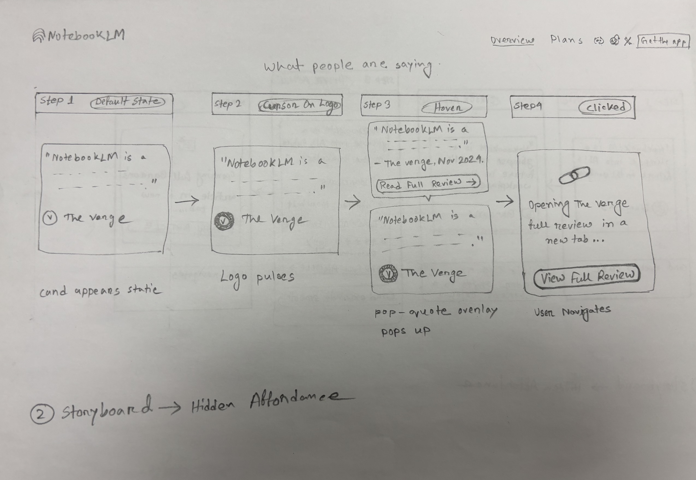
Sketch Idea 2
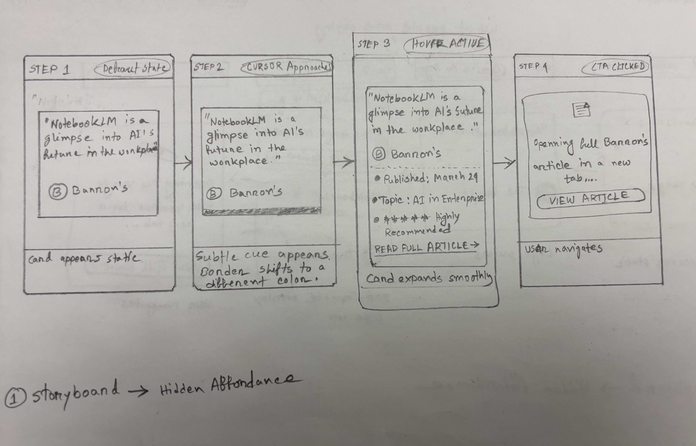
03 Gulf of Execution — Selective Summarization
Issue Identified: When a document is uploaded, NotebookLM summarizes the entire document by default. Users who want a summary of only a specific section are not guided to do so before the summary is generated, creating a gulf of execution — the interface does not clearly support the user's intended action.
Sketch Redesigns: Two sketches explored a highlighting-based workflow where users can select a specific portion of the document before requesting a summary.
Sketch Idea 1
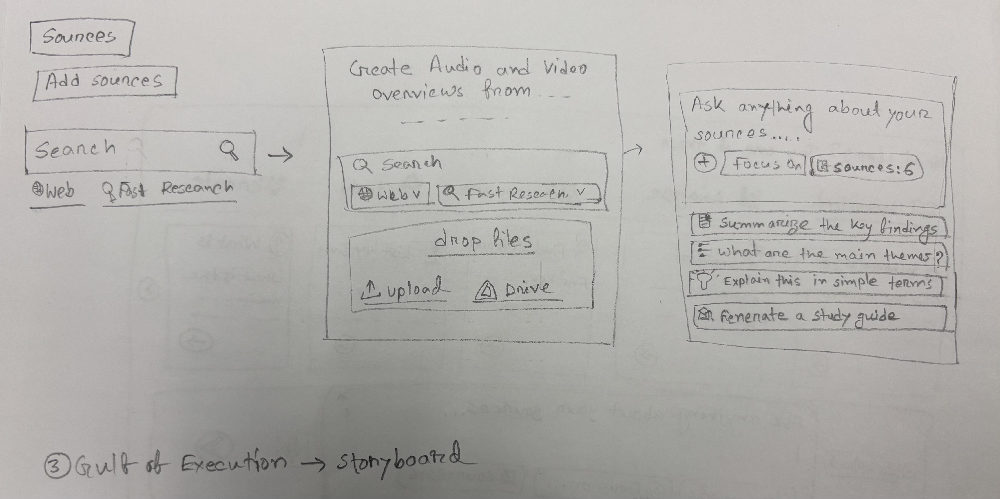
Sketch Idea 2
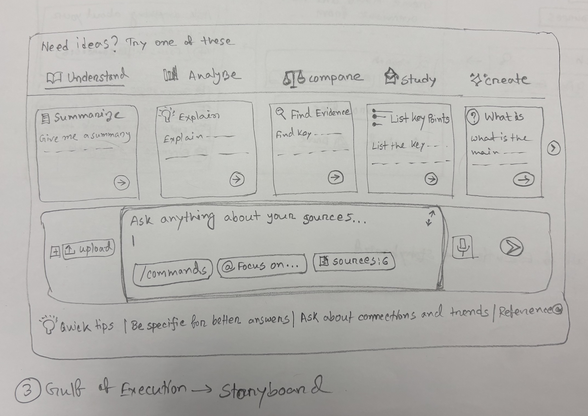
Sprint 2Prototype Testing with Users
Testing Methodology
A Figma prototype was built based on the Sprint 1 sketches. Four users were tested on structured tasks targeting each identified issue. Performance was measured by time-on-task or number of steps taken, comparing the original NotebookLM design against the first redesign.
01 Grid — Information Density
Task (User 1): Browse the homepage and gather key information about the website's offerings.
Measurement: Time taken to read the headings of the first 4 content blocks and understand what they are about.
Result: Original design took 15–20 seconds. The redesign enabled the user to consume the same content in about 10 seconds — nearly double the content visible in the same vertical space.
Original
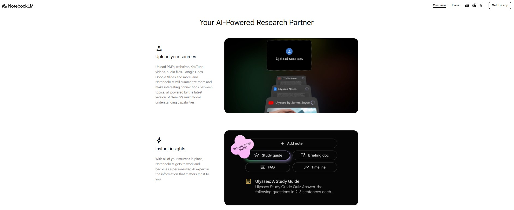
Redesign 1
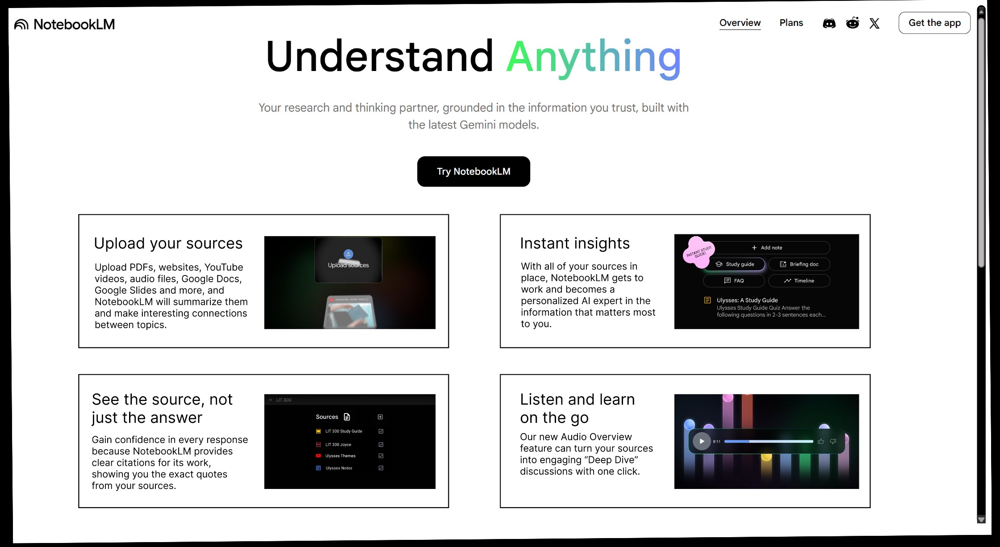
02 Hidden Affordance — Carousel
Task (User 2): Check the user review section and try to go to the source website of a review.
Measurement: Whether the user can find the links to source websites within 10 seconds.
Result: The original design did not allow the user to find the links at all. The redesign let the user find the "Go to website" button within 5 seconds.
Original
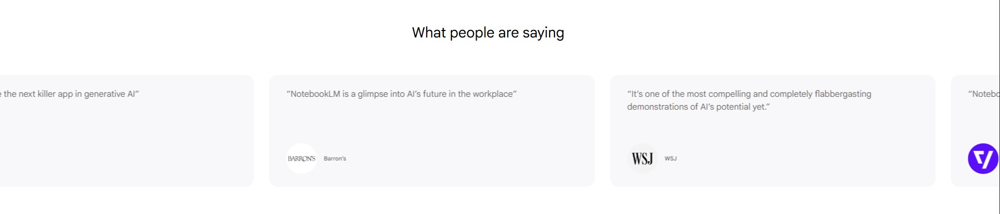
Redesign 1
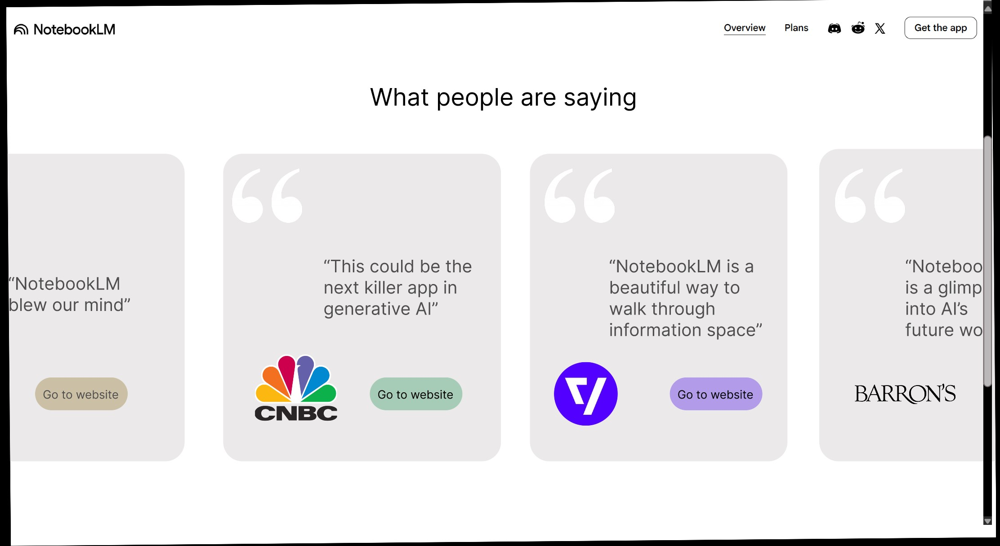
User Suggestion & Redesign 2: User 2 suggested adding navigation arrows on both sides of the carousel so users can manually control scrolling. This was implemented in Redesign 2.
Redesign 2 — carousel arrows added for manual navigation control.
03 Gulf of Execution — Selective Summarization
Task (Users 3 & 4): Upload a document and get a summary for one or two specific paragraphs, not the whole document.
Measurement: Number of steps taken to achieve the task.
Result: In the original design both users required 5 steps, having to first receive a full summary and then ask again for the specific section. The redesign reduced this to 3 steps by allowing section highlighting before summarization.
Note: User 4 pointed out that Redesign 1 removed the ability to summarize the whole document — an unintentional omission that was fixed in Redesign 2.
Original
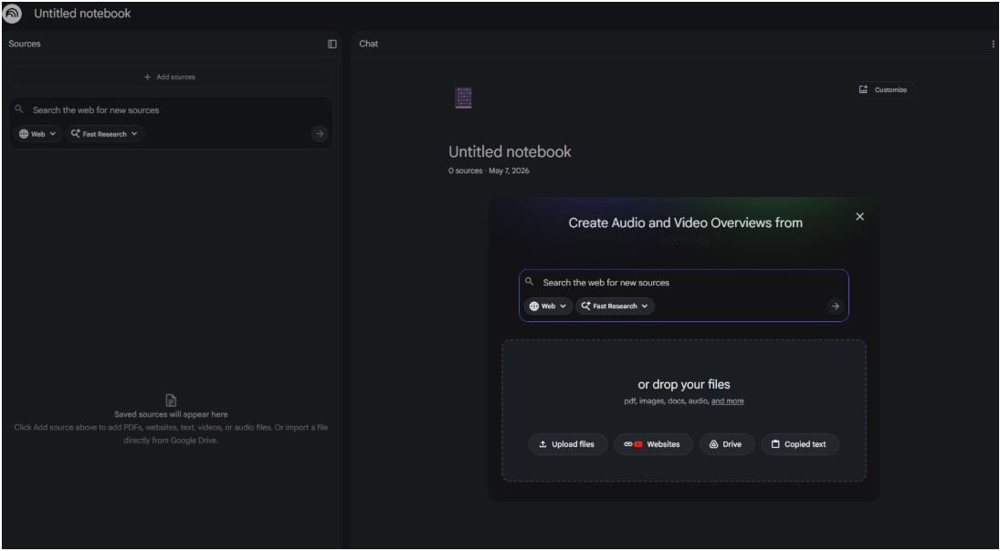
Redesign 1
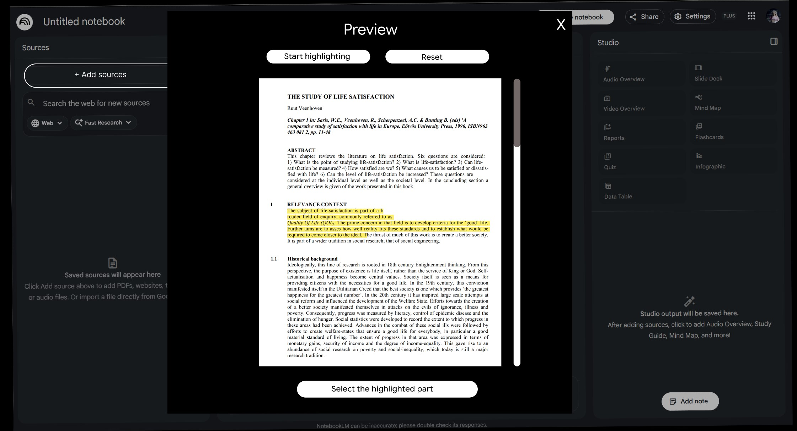
User Suggestion & Redesign 2: Added a "Proceed without highlighting" option so users can still summarize the full document if desired.
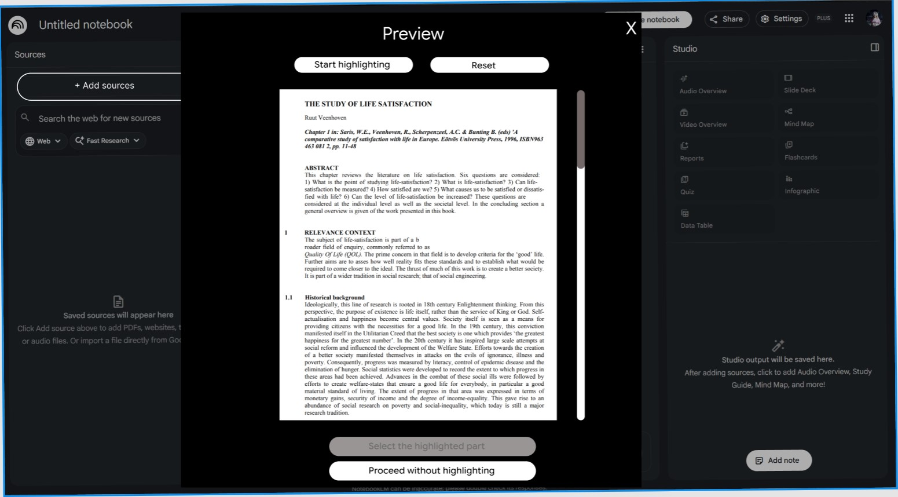
Redesign 2 — "Proceed without highlighting" option restores full-document summarization.
ResultsTesting Result Compilation
Issue
User
Original Design
Redesign 1
Grid
User 1
Took 15–20 seconds
Took ~10 seconds
Hidden Affordance
User 2
Couldn't complete within 10 seconds
Completed in 5 seconds
Gulf of Execution
User 3
Took 5 steps
Took 3 steps
Gulf of Execution
User 4
Took 5 steps
Took 3 steps
Collaboration Technologies
Figma — collaborative prototype design and iteration across both sprints.
Messenger — group chat for asynchronous discussion and quick decisions.
Google Meet — two virtual meetings with screen sharing for planning and review.
Google Docs — shared report writing and draft data collection.
Google Slides — final presentation prepared collaboratively for in-class delivery.
Reflection
This project demonstrated how structured user testing surfaces insights that sketching alone cannot. The carousel arrow suggestion from User 2 and the "proceed without highlighting" feedback from User 4 both came directly from testing — neither was anticipated during Sprint 1. Following the full design process from issue identification through sketch, prototype, and test made each design decision grounded in real observed behavior rather than assumption.
References
Reynolds, T. (2026). Process of Interaction Design (Sprints 1 & 2) [Lecture slides]. HCC 629, UMBC.
Sharp, H., Preece, J., & Rogers, Y. (2023). Interaction design: Beyond human-computer interaction (6th ed.). John Wiley & Sons.